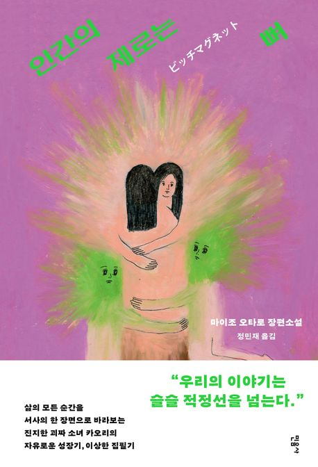

추천도서
부키만의 차별화된 AI추천 서비스가 당신의 취향에
딱 맞는 책을 엄선하여 골라드립니다.
추천도서
부키만의 차별화된 AI추천 서비스가 당신의 취향에
딱 맞는 책을 엄선하여 골라드립니다.
“인간의 제로는 뼈”
마이조 오타로 저자(글) ㅣ 정민재 번역
삶의 모든 순간을 서사의 한 장면으로 바라보는진지한 괴짜 소녀 카오리의 자유로운 성장기, 이상한 집필기
마이조 오타로가 여러 소설을 통해 보여 주는 ‘그러니까 내가 만든 이야기가 진짜야.’라는 외침을 나는 완전히 지지한다. 나도 그런 사람이기 때문이고 너무나 언제나 정말로 그런 마음이기 때문이다.-박솔뫼(소설가)┃추천의 말에서
“새벽 3시면 여름이라도 아직 어둡고 조용한 시간이고 집과 창문이 전부 철로의 반대쪽을 보고 있긴 하지만, 그래도 깔려 있는 자갈들을 밟으면 카랑 코롱 울려서 시끄러울 테니 되도록 레일이나 침목 위를 걷거든. 걷고 있지만 리듬에 올라타는 느낌이 좋단 말야. 침목 침목 레일, 침목 레일 침목 레일 레일 레일 레일 침목…….”(……) 나는 밤의 철도 노선에 대한 꿈이 마음에 들기 시작한다.실제로 그곳에 가 보고 싶다고는 생각하지 않지만.그건 벌써 ‘이야기’로써 내 안에서 경험해 버린 일이니까.-14~21p
지금 생각하는 것을 말하고 싶지 않다는 건 잘못된 걸까?나의 언어는 몸 안에서 바깥으로 도망치고 말았다. 늑골 사이에서 슉 하고 등 쪽으로…….누군가의 솔직한 본심이 완전히 드러난 이야기는 나를 두렵게 한다. 분명 이런 반응을 보이는 건 나뿐만이 아닐 테지. 세상 사람들 중 일부는 누군가가 이야기하는 진짜 감정을 견딜 수 없는 것이다. 그들은 자신들의 진짜 감정을 언어화할 수 없으며 그렇게 하겠다는 마음도 없다.어쩌면 그런 사람 중에서 또 일부가 이야기를 만들어 내는 것일 테다. 그런 사람을 위해서 이야기는 만들어지는 것이리라.-39~40p